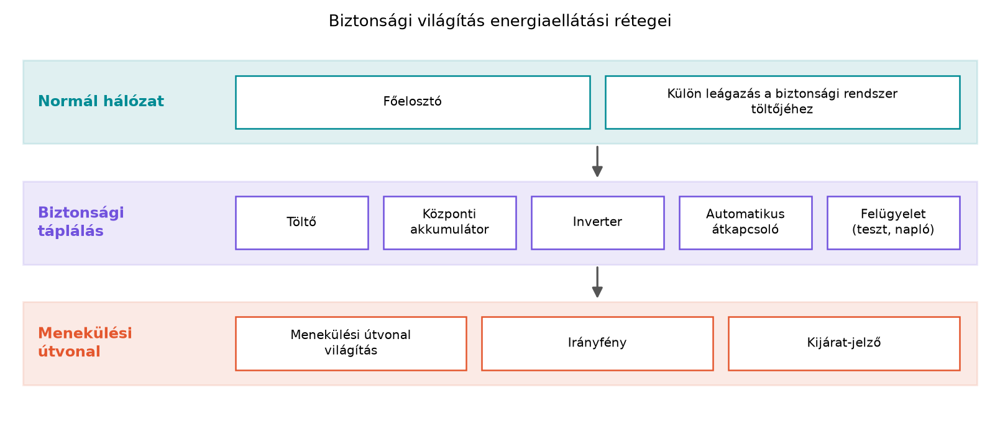

Statikus változat (mint a PDF-ben)
Egy áruházban vagy irodaházban áramszünetkor a normál világítás kialszik. A bent tartózkodó embereknek pánik nélkül, gyorsan kell eljutniuk a kijáratig, és látniuk kell, merre van a kijárat. Ha a biztonsági világítás nem működik, az életveszélyt, tűz esetén füstben való tájékozódási zavart és balesetet okoz. Villanyszerelőként neked kell tudnod:
Ez az alfejezet a Világítás tervezése: beltér és kültér alfejezetre épül, de itt nem a kényelmi világításról, hanem a veszélyhelyzeti világításról beszélünk.
Az alábbi rétegábra a normál hálózattól a menekülési útvonalig mutatja az energiaellátás útját. A normál hálózat kiesésekor a biztonsági táplálás automatikusan átveszi a szerepet.

A rajzon látható, hogy a normál hálózati köröktől elkülönülő, biztonsági táplálású áramkör szolgálja ki a menekülési világítást. A központi egység felügyeleti része (tesztkapcsoló, naplózás) folyamatosan vagy időszakosan ellenőrzi, hogy a rendszer tényleg működőképes-e.
A köznyelvben gyakran keverik a „vészvilágítás”, „biztonsági világítás” és „irányfény” kifejezéseket. A szabványos felosztás szerint érdemes megkülönböztetni.
Definíció. A vészvilágítás (emergency lighting) olyan világítási rendszer, amely a normál világítási táplálás kiesésekor működik. Az MSZ EN 1838 / MSZ EN 50172 szerinti felosztásban két fő része van (ellenőrizendő: magyar szakkifejezések az OTSZ és az MSZ EN 1838 magyar szövege szerint):
A biztonsági (menekülési) világítás további fajtái:
Szabvány. A létesítési kötelezettséget és a követelményeket hazánkban az OTSZ (54/2014. BM rendelet) és a biztonsági világításra vonatkozó Tűzvédelmi Műszaki Irányelv adja; ezekhez kapcsolódnak az MSZ EN 1838, MSZ EN 50172 és MSZ EN 50171 szabványok (ellenőrizendő: hatályos jogszabály és TvMI). A telepítés villamos követelményeire az MSZ HD 60364 sorozat vonatkozik; a biztonsági célú táplálásra az 5-56 rész ad irányelveket (ellenőrizendő: aktuális szabványkiadások és magyar bevezetésük).
A biztonsági világítás csak akkor ér valamit, ha a normál hálózat kiesése után is működik. A gyakorlatban két fő megoldás terjedt el.
Központi akkumulátoros rendszer. Egy központi szekrényben helyezik el az akkumulátorokat, a töltőt és az invertert. A biztonsági világítási köröket erről a központi egységről táplálják. Előnye, hogy az akkumulátorok karbantartása egy helyen történik, a lámpatestek egyszerűbbek, és egy központi felügyelet figyelhető. Hátránya, hogy a központi egység meghibásodása az egész vészvilágítást érintheti, és a biztonsági körök vezetékeinek tűzállósága kiemelt követelmény.
Egyedi akkumulátoros lámpatestek. Minden lámpatestbe beépített akkumulátor, töltő és elektronika kerül. Normál üzemben a hálózat tölti az akkumulátort; hálózatkieséskor a lámpatest saját akkumulátoráról világít. Előnye a decentralizált működés: egy lámpatest hibája nem viszi el a többit. Hátránya, hogy minden lámpatestet külön kell ellenőrizni, és az akkumulátorok egyenként öregszenek.
Üzemidő és átkapcsolási idő. A vészvilágításnak a hálózat kiesése után rövid időn belül el kell érnie a szükséges fényszintet. A gyakorlatban elterjedt követelmény az 5 másodpercen belüli átkapcsolás, de a szabvány pontos értéket ad meg (ellenőrizendő: MSZ EN 1838). Az üzemidő általában legalább 1 óra, de gyakran 3 órát írnak elő; ez attól függ, hogy az épületet milyen gyorsan lehet kiüríteni, illetve hogy az üzemeltető milyen kockázatértékelést fogadott el. Az értékek mindig a tervben szerepelnek, és a lámpatest adattábláján is jelölni kell őket.
Példa. Egy iroda menekülési útvonalán 12 darab, egyenként 8 W felvételű vészvilágítási lámpatest van. A tervező 3 órás üzemidőt ír elő. A központi akkumulátorból kiveendő minimális energia:
Ez a számítás a lámpatestek névleges teljesítményfelvételét veszi alapul, de a valós méretezésnél az akkumulátor öregedését, a töltéshatásfokot és a hőmérsékleti tényezőket is figyelembe kell venni, ezért a gyártói adatlap az irányadó (ellenőrizendő: gyártói adatlap).
Példa. Egy egyedi akkumulátoros irányfény lámpatest normál üzemben 1,5 W-ot vesz fel, vészüzemben 2 W-ot. Az előírt üzemidő 3 óra. Az akkumulátor minimális kapacitása energiában:
Ha az akkumulátor névleges feszültsége 3,6 V, akkor a minimális töltésmennyiség amperórában:
A gyakorlatban ennél nagyobb, jellemzően 2–4 Ah kapacitású akkumulátort építenek be, hogy az öregedés és a hőmérséklet hatását kompenzálják.
A biztonsági világítás telepítésekor a legfontosabb szempont, hogy a rendszer akkor is működjön, amikor a normál világítási áramkör meghibásodik vagy tűz miatt lekapcsol. Ezért:
Az alaprajzon a menekülési útvonal (szaggatott vonal) a nyitott irodatérből a folyosón át két kijárathoz (E1, E2) és a lépcsőhöz vezet. Vészvilágítási lámpatest (V) áll a folyosó és az irodatér ajtajának kereszteződésénél, a folyosó irányváltásánál, a lépcsőnél, a tűzoltó készüléknél (TK) és a kézi tűzjelzőnél (KJ); a kijáratok fölött megvilágított kijárati jel (E), a hosszú folyosón irányjel van. A nagy, kijelölt út nélküli irodatér térvilágítást (T) kap. A HTML-kiadásban az elhelyezés lépésenként követhető (útvonal → kijáratok → irányváltások → lépcső és tűzvédelmi eszközök → térvilágítás).
Biztonsági korlát. A biztonsági világítás bekötése hálózati feszültségű (230 V) munka, ezért azt csak jogosult, arra képesített személy végezheti. A tanuló tanműhelyi környezetben, törpefeszültségű modellen gyakorolhat, vagy jogosult oktató felügyelete mellett dolgozhat.
A biztonsági világítást a villamos tervdokumentációban egyértelműen el kell különíteni a normál világítástól. A rajzon jellemzően külön jelkulcs mutatja a vészvilágítási lámpatesteket, az irányfényeket és a biztonsági táplálású köröket. Az egyvonalas rajzon a biztonsági táplálású elosztó külön mezőként jelenik meg, és feltüntetik az üzemidőt.
A tervnek tartalmaznia kell:
Villanyszerelőként a rajzolvasásnál figyelj arra, hogy a vészvilágítási kör ne legyen összekeverhető a normál világítással; a bekötésnél a lámpatest sorkapcsain jelölik, melyik a folyamatos táplálás, a kapcsolt fázis és a védővezető.
A biztonsági világítás csak akkor megbízható, ha rendszeresen ellenőrzik és karbantartják. A tipikus ellenőrzési ciklusok:
Szabvány. Az ellenőrzési és karbantartási követelményeket az MSZ EN 50172 szabvány írja le, amely a vészvilágítási rendszerek üzemeltetését tárgyalja. A pontos vizsgálati időközök és a mért értékek határértékei a szabvány aktuális kiadásától függnek (ellenőrizendő: MSZ EN 50172).
A tesztek eredményét naplóban kell rögzíteni. A napló bejegyzései tartalmazzák:
A naplózás nem papírmunka-kérdés, hanem a biztonsági rendszer működőképességének bizonyítéka. Egy tűz utáni hatósági vizsgálatnál a napló hiánya súlyos megállapítás lehet.
Egy bevásárlóközpont bővítésekor a kivitelező az egyedi akkumulátoros irányfény lámpatesteket a normál világítási kapcsoló után kötötte be. A beszállító szerint a lámpatestek rendben működtek, de csak akkor kaptak feszültséget, amikor a normál világítást felkapcsolták. Mivel a kapcsoló lekapcsolásakor a lámpatestek vészüzembe kapcsoltak és lemerítették az akkumulátorukat, éjszakai áramszünetkor már üres akkumulátorral nem világítottak. A hibát a havi funkcióteszt során vették észre: a lámpatestek a tesztkapcsolóval szimulált hálózatkieséskor azonnal kialudtak. A javítás során a tápellátást át kellett kötni állandó fázisra, és minden lámpatestet újra kellett tesztelni teljes üzemidővel. Árulkodó tünet: a világítás lekapcsolása után a vészvilágítási lámpatestek kigyulladtak, majd néhány óra múlva kialudtak. Tanulság: a bekötésnél ellenőrizni kell, hogy a vészvilágítási lámpatest folyamatos táplálást kapjon, és a funkcióteszttel ezt igazolni kell.
Tilos a vészvilágítási lámpatest tápellátását a normál világítás kapcsolójával megszakítani. A lámpatest a kapcsoló lekapcsolását hálózatkiesésnek érzékeli: vészüzembe kapcsol, és lemeríti az akkumulátorát; valódi hálózatkieséskor így nincs tartalék, és a vészüzemi próbák is félrevezetők.
Gyakori hiba: a központi akkumulátoros rendszernél a biztonsági köröket ugyanabba a kábeltálcába fektetik, mint a normál köröket, tűzálló elválasztás nélkül. Tűz esetén a normál kábel égése a biztonsági kört is tönkreteheti. A helyes megoldás a tűzálló kábelezés és a fizikai elkülönítés.
Másik gyakori hiba: az irányfényt túl magasra (pl. magas csarnok mennyezetére) vagy takart helyre szerelik, ezért a felismerési távolságon belül nem látható, illetve a jel mérete nem felel meg a felismerési távolságnak. A kijárati jelet a kijárat fölé, jól látható magasságba (jellemzően 2,0–2,5 m; ellenőrizendő: MSZ EN 1838, gyártói adat) kell szerelni; füstveszélyes helyen kiegészítő, alacsony szintű útvonaljelzés is szóba jöhet.
Hiba: a tesztelés alkalmával csak a lámpatest világítását nézik, de nem mérik a tényleges megvilágítást. Egy elöregedett akkumulátorral a lámpatest világít, de a fényszint nem éri el a szabványos minimális értéket. A helyes gyakorlat a luxmérővel végzett ellenőrzés és az éves teljes üzemidő teszt.
1. feladat (A)
Sorold fel a biztonsági (menekülési) világítás fő fajtáit (menekülési
útvonal, térvilágítás, kijárat-jelzés), és írd le egy-egy mondatban,
mire valók.
2. feladat (A)
Egy irányfény lámpatest akkumulátora 6 V névleges feszültségű, és a
vészüzemi teljesítményfelvétel 3 W. Mennyi az akkumulátor árama
vészüzemben?
3. feladat (B)
Egy menekülési útvonalon 8 db, egyenként 5 W-os vészvilágítási lámpatest
van, és a rendszer központi akkumulátorról működik. Az előírt üzemidő 3
óra.
a) Mekkora a minimális szükséges energia Wh-ban?
b) Ha a központi akkumulátor névleges feszültsége 24 V, mekkora a
minimális töltésmennyiség Ah-ban?
c) Miért kell a gyakorlatban ennél nagyobb kapacitást választani?
4. feladat (B)
Egy egyedi akkumulátoros lámpatest normál üzemben a hálózatról 1,2 W-ot
vesz fel, vészüzemben 2,4 W-ot. A tervezett üzemidő 3 óra. Mekkora
legyen az akkumulátor minimális kapacitása Wh-ban, és ha a feszültsége
3,6 V, akkor Ah-ban? Az öregedési tényezőt 1,25-nek véve mekkora legyen
a tényleges beépített kapacitás?
5. feladat (C)
Egy felülvizsgálat során a villanyszerelő azt tapasztalja, hogy a
központi akkumulátoros rendszer biztonsági körében a kábelek a normál
világítási körökkel azonos kábeltálcán futnak, minden tűzálló
elválasztás nélkül. Magyarázd el, miért jelent ez kockázatot, és mit
kellene tenni a hiba kijavításához.
6. feladat (D)
Egy irodaházban éves ellenőrzéskor a tesztkapcsolóval szimulált
hálózatkieséskor az egyik irányfény lámpatest nem világít. Sorold fel a
hibakeresés lépéseit a feszültségmentesítéstől a javításig. Milyen
méréseket végeznél, és milyen dokumentumot kell kiállítani?
Önellenőrzés – válaszok
A biztonsági (menekülési) világítás a menekülést szolgálja a normál táplálás kiesésekor; a tartalékvilágítás a munkafolyamat biztonságos folytatásához vagy leállításához kell, de nem helyettesíti a biztonsági (menekülési) világítást.
Azért, mert az akkumulátor csak folyamatos hálózati táplálás mellett marad feltöltve. Ha a normál világítás kapcsolója szakítja meg, a lámpatest a lekapcsolást hálózatkiesésnek érzékeli, vészüzembe kapcsol és lemeríti az akkumulátort; valódi hálózatkieséskor így nincs tartalék.
Jellemzően évente, de az üzemeltetési előírás és a szabvány alapján kell meghatározni (ellenőrizendő: MSZ EN 50172).
A tesztkapcsolóval a normál táplálást lehet szimuláltan megszakítani, hogy a lámpatestek vészüzemre kapcsolását a hálózat tényleges kikapcsolása nélkül ellenőrizzük.
Hamis. Az irányfényeket a menekülési út mentén, irányváltásoknál, kereszteződéseknél és a kijáratoknál kell elhelyezni, nem csak a kijárat fölött.
Feladatok megoldásai
1. feladat (A)
A biztonsági (menekülési) világítás fő fajtái:
- Menekülési útvonal világítás: a kijelölt menekülési út
megvilágítása.
- Térvilágítás (anti-panic): nagyobb terekben a pánik megelőzésére
szolgáló megvilágítás.
- Kijárat-jelzés és irányfény: a kijáratot és a menekülési irányt mutató
lámpatestek.
2. feladat (A)
Adott:
,
.
Keresett:
.
Képlet:
3. feladat (B)
Adott:
,
,
,
.
a) Minimális energia:
b) Minimális töltésmennyiség:
c) A gyakorlatban az akkumulátor öregedése, a hőmérsékleti hatások és a
töltéshatásfok miatt nagyobb kapacitást kell beépíteni; a gyártói
adatlapok szerint méreteznek.
4. feladat (B)
Vészüzemi teljesítmény:
.
Minimális energia:
Minimális töltésmennyiség:
Öregedési tényezővel:
Tehát legalább 2,5 Ah kapacitású akkumulátort kell választani.
5. feladat (C)
A biztonsági kör kábelei és a normál körök közös kábeltálcán való
vezetése tűz esetén veszélyes, mert a normál kábelek égése a biztonsági
világítás kábeleit is tönkreteheti, így a vészvilágítás nem működik. A
javításhoz a biztonsági köröket tűzálló kábelekkel, a normál köröktől
fizikailag elkülönítve kell szerelni, a szabvány és a terv szerint.
6. feladat (D)
Hibakeresési lépések:
1. Feszültség alatt (csak jogosult személy, megfelelő műszerrel): a
tápfeszültség megléte a lámpatest állandó fázisú kapcsán.
2. Feszültségmentesítés az öt biztonsági szabály szerint (lekapcsolás,
visszakapcsolás elleni biztosítás, feszültségmentesség ellenőrzése
kétpólusú vizsgálóval, földelés és rövidre zárás, szomszédos feszültség
alatti részek lefedése), majd szemrevételezés (lámpatest állapota,
töltésjelző LED, bekötés), akkumulátor és szükség szerint lámpatest
cseréje a gyártói előírás szerint.
3. Visszakapcsolás, majd a töltési idő kivárása a gyártó előírása
szerint (a lámpatest előbb töltődjön hálózatról).
4. Tesztelés: tesztkapcsolóval szimulált hálózatkiesés és a vészüzem
ellenőrzése, majd teljes üzemidőteszt.
5. Naplózás: a hiba, a javítás és a teszt eredményének rögzítése.
A dokumentum: a biztonsági világítási napló, valamint szükség szerint
jegyzőkönyv.
A vészvilágítás a normál világítás kiesésekor működik; két fő része a biztonsági (menekülési) világítás és a tartalékvilágítás. A biztonsági (menekülési) világításon belül megkülönböztetjük a menekülési útvonal világítását, a térvilágítást, a nagy kockázatú munkahelyek világítását és az irányfényt/kijárat-jelzést. Az energiaellátás lehet központi akkumulátoros vagy egyedi akkumulátoros lámpatestes; a lámpatesteknek állandó fázist kell kapniuk, hogy az akkumulátoruk töltődjön. A fényszint és az üzemidő követelményei szabványban rögzítettek, jellemzően menekülési útvonalon 1 lx, térvilágításnál 0,5 lx a padlón és 1–3 óra üzemidő, de mindig az aktuális szabványt kell ellenőrizni (MSZ EN 1838, MSZ EN 50172). A telepítéskor biztosítani kell a biztonsági körök elkülönítését és tűzállóságát. Az ellenőrzés és karbantartás során havi funkciótesztet és éves teljes üzemidőtesztet kell végezni, és minden eredményt naplózni kell. A legfontosabb összefüggés a szükséges energia méretezésére: , az akkumulátor kapacitása: . Tilos a vészvilágítási lámpatestet a normál világítás kapcsolójáról táplálni. A biztonsági világítás tápellátásának méretezése és a tesztelési napló vezetése a kivitelező és az üzemeltető közös felelőssége.